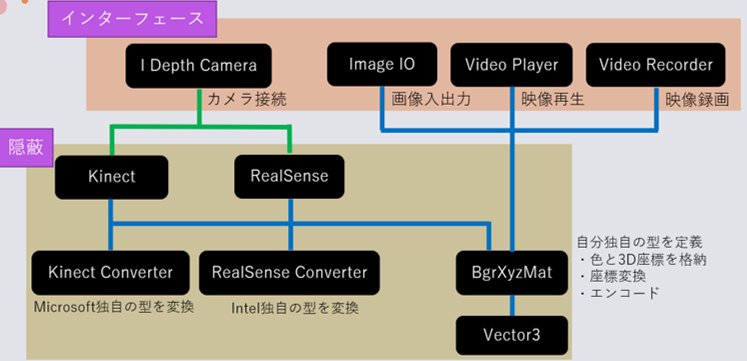

Kinect, Realsenseが同一のインターフェースで動きます。
使い方はIDepthCamera.csのとおり, ConnectとDisconnectだけ。

ここでは出力のBgrXyzMatクラスについて説明します。
ざっとその機能を列挙すると、
- BGR ... カラー画像
- XYZ ... 実空間座標 (mm)
- BgrXyzMat ( Mat bgr, Mat xyz ) ... コンストラクタ
- BgrXyzMat ( byte[] BGRBytes, byte[] XYZBytes ) ... コンストラクタ
- Create ( Mat bgr, Mat xyz ) ... メソッドで初期化
- YmsDecode ( byte[] BGRBytes, byte[] XYZBytes ) ... メソッドで初期化
- YmsEncode () ... byte配列にエンコード
- Empty () ... 中身の存在を確認
- Depth8 ( int minDistance, int maxDistance ) ... XYZを8bitグレースケールに圧縮
- GetPointInfo ( Point point ) ... 指定したピクセルの情報を構造体で返す
- Move ( Vector3 delta ) ... 指定したベクトル分だけ全体を移動させる
- Scale ( Vector3 delta ) ... 指定したベクトル分だけ全体のスケールを変える
- Rotate ( float pitch, float yaw, float roll ) ... 右手系の3次元回転
そしてこれらをメソッドチェーン的に繋げることで点群の扱いを簡便にしました。
例)
// 初期化と回転の補正をまとめて記述
var frame = BgrXyzMat
.Create( colorMat, pointCloudMat )
.Rotate( 0.1f, 0f, -0.2f );
// 初期化と並進＆回転してからの距離の取得を一発で
var distance = BgrXyzMat
.Create ( colorMat, pointCloudMat )
.Move ( new Vector3 ( 0, 0, 1000 ) )
.Rotate ( -0.5f, 0f, 0f ) )
.GetPointInfo ( new Point ( 100, 150 ) )
.Z;